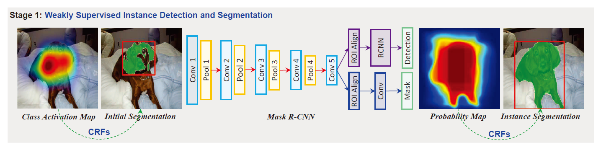
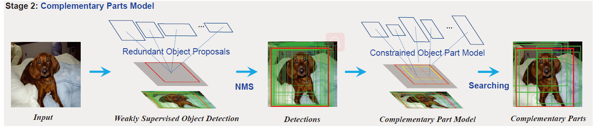
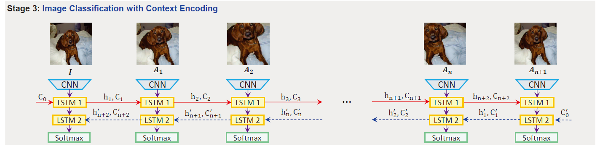

文章标题：Weakly Supervised Complementary Parts Models for Fine-Grained Image Classification from the Bottom Up
文章链接：https://arxiv.org/abs/1903.02827
发表时间：2019-03-07
本文主要：用图像级标签训练的深度神经网络只倾向于聚焦于discriminative parts（有识别力的部分），而忽略了其他object parts。
本文以弱监督的方式建立互补局部模型（complementary parts model），以检索由卷积神经网络检测到的被domain object parts抑制的信息。
(1) 采用基于MASK R-CNN和CRF的分割方法，通过弱监督对象检测和实例分割，提取粗糙的实例掩码。
(2) 估计并搜索每个对象实例的最佳Part Model，Part Model是指包含了所有或者部分目标的区域。Part Model的选择有两个基本准则。首先，每一个Part Model包含足够多的discriminative 部分。第二，每对part pairs之间的不同应该尽可能的大。
(3) 构建双向长短期记忆（LSTM）网络，将这些互补部分的part信息融合并编码成图像分类的综合特征
训练过程，从整体上分为3个部分。首先使用 Mask RCNN 和 CRF 获取粗糙的实例分割；粗糙的实例分割为Part Model的生成提供依据，最后让 Part Model 所在的特征之间，通过LSTM 交换信息，并通过全连接输出分类，这样就可以更新CNN对于非discriminative part的感知了。


